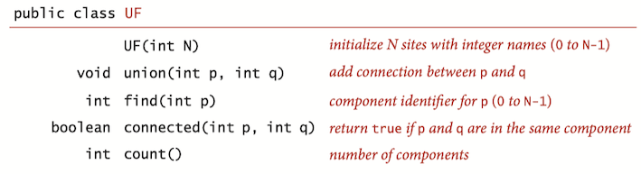
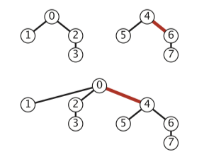

Chapter 1: Union Find¶
1 Dynamic Connectivity¶
The graph connectivity problem is the following: Given an undirected graph G, preprocess the graph so that queries of the form “are nodes u and v connected?”
Connected components: Maximal set of objects that are mutually connected.

Union-Find data type (API)¶
Union-Find API:
- the
union() operation merges two components if the two sites are in different components. - the
find() operation returns an integer component identifier for a given site. - the
connected() operation determines whether two sites are in the same component. - the
count() method returns the number of components.

public class QuickFind { private int[] id; private int count; public QuickFind(int N) { count = N; id = new int[N]; for (int i = 0; i < N; i++) id[i] = i; } public boolean connected(int p, int q) { return find(p) == find(q); } public int find(int p) { } public void union(int p, int q) { } }
Dynamic-connectivity client¶
Read in number of objects N from standard input. Repeat:
- read in pair of integers from standard input
- if they are not yet connected, connect them and print out pair
We shall consider several different implementations, all based on using the site-indexed id[] array, to determine whether two sites are in the same connected component.
2 Quick-Find¶
Quick-find idea: all sites in a component must have the same value in id[].
This method is called quick-find because
public class QuickFind { private int[] id; public QuickFind(int N) { id = new int[N]; for (int i = 0; i < N; i++) id[i] = i; } public boolean connected(int p, int q) { return id[p] == id[q]; } public void union(int p, int q) { int pid = id[p]; int qid = id[q]; for (int i = 0; i < id.length; i++) if (id[i] == pid) id[i] = qid; } }
Analysis¶
The quick-find algorithm uses one array access for each call to
WORST CASE: suppose we wind up with a single component. This requires at least N-1 calls to
3 Quick-Union¶
Data structure:
- Interpretation: id[i] is parent of i.
- Root of i is id[id[id[...id[i]...]]] (keep going until it doesn’t change)
Specifically, the id[] entry, for each site is the name of another site in the same component (possibly itself)—we refer to this connection as a link. To implement
public class QuickUnion { private int[] id; private int count; public QuickUnion(int N) { count = N; id = new int[N]; // set id of each object to itself (N array accesses) for (int i = 0; i < N; i++) id[i] = i; } private int find(int p) { // chase parent pointers until reach root while (p != id[p]) p = id[p]; return p; } public boolean connected(int p, int q) { //check if p and q have same root return find(p) == find(q); } public void union(int p, int q) { // change root of p to point to root of q int i = find(p); int j = find(q); id[i] = j; count--; } }
Analysis¶
The number of array accesses used by
WORST CASE: suppose we wind up with a single component, the running time is quadratic
4 Improvement 1: weighting¶
Weighted quick-union: Rather than arbitrarily connecting the second tree to the first for

public class WeightedQuickUnion { private int[] id; // parent link (site indexed) private int[] sz; // size of component for roots (site indexed) private int count; // number of components public WeightedQuickUnion(int N) { count = N; id = new int[N]; for (int i = 0; i < N; i++) id[i] = i; sz = new int[N]; for (int i = 0; i < N; i++) sz[i] = 1; } public int count() { return count; } public boolean connected(int p, int q) { return find(p) == find(q); } private int find(int p) { // Follow links to find a root. while (p != id[p]) p = id[p]; return p; } public void union(int p, int q) { int i = find(p); int j = find(q); if (i == j) return; // Make smaller root point to larger one. if (sz[i] < sz[j]) { id[i] = j; sz[j] += sz[i]; } else { id[j] = i; sz[i] += sz[j]; } count--; } }
Analysis¶
The depth of any node in a forest built by weighted quick-union for N sites is at most \log N.
The worst case for weighted quick union is when the sizes of the trees to be merged by

For weighted quick-union with N sites, the worst-case order of growth of the cost of
Specifically, the weighted quick-union algorithm uses at most cM\log N array accesses to process M connections among N sites for a small constant c.
5 Improvement 2: path compression¶
IDEA: Just after computing the root of p, set the id of each examined node to point to that root.
Two-pass implementation: add second loop to
Simpler one-pass variant: Make every other node in path point to its grandparent (thereby halving path length).
private int find(int p) { // Follow links to find a root. while (p != id[p]) { // only one extra line of code ! id[p] = id[id[p]]; p = id[p]; } return p; }
Amortized Analysis¶
Starting from an empty data structure, any sequence of M union-find ops on N objects makes \le c ( N + M \lg^*N ) array accesses, where lg^* is iterated logarithm[wiki]. (lg^*N表示将N变为小于1需要的\log迭代次数)